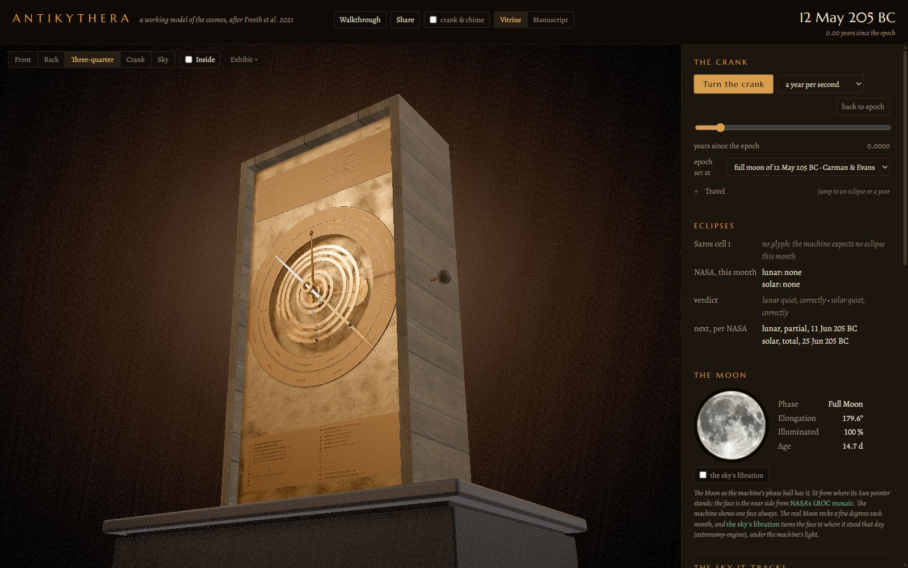
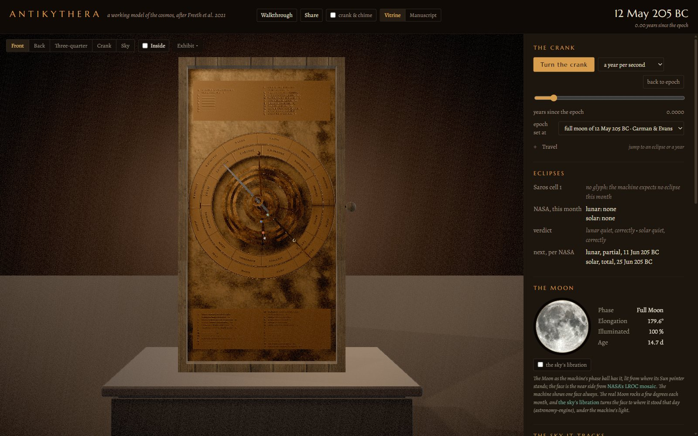
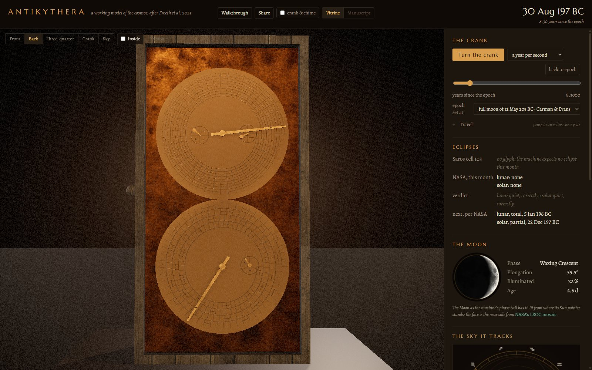
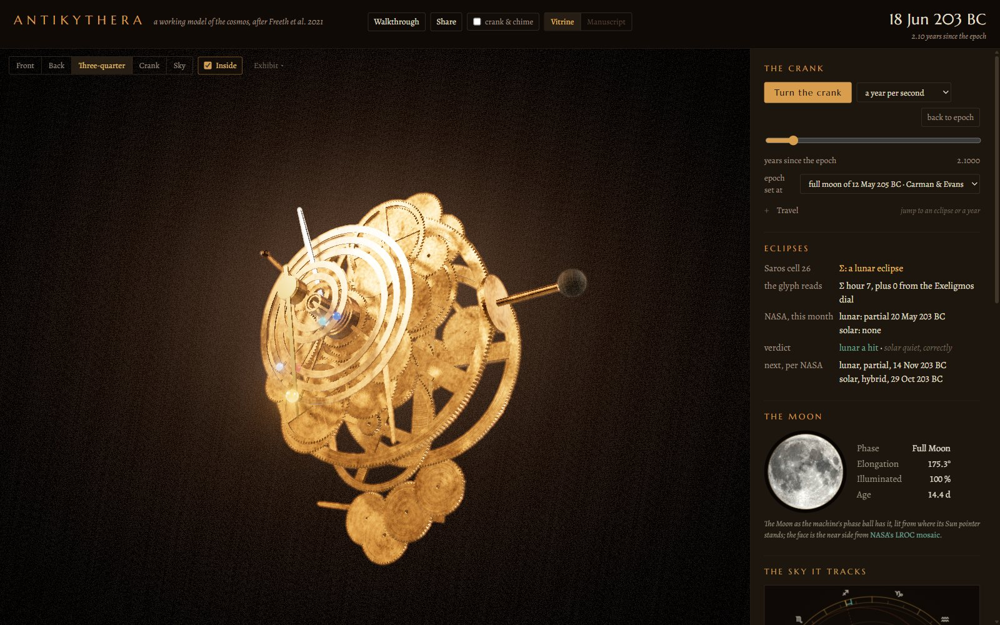
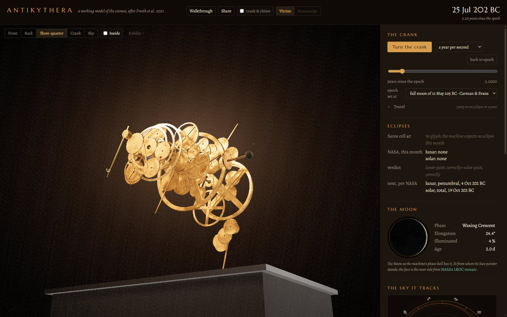
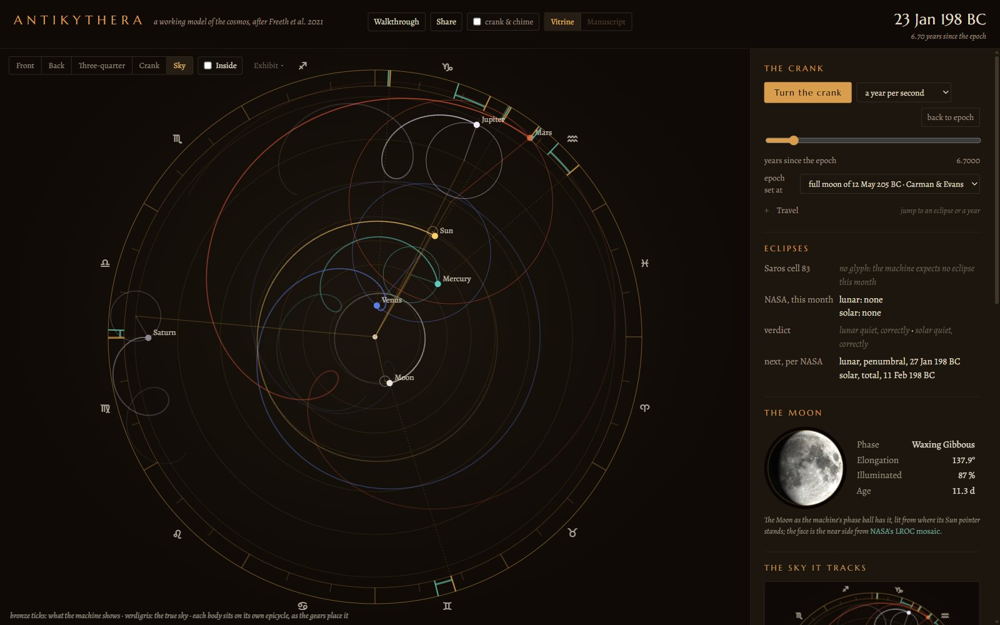
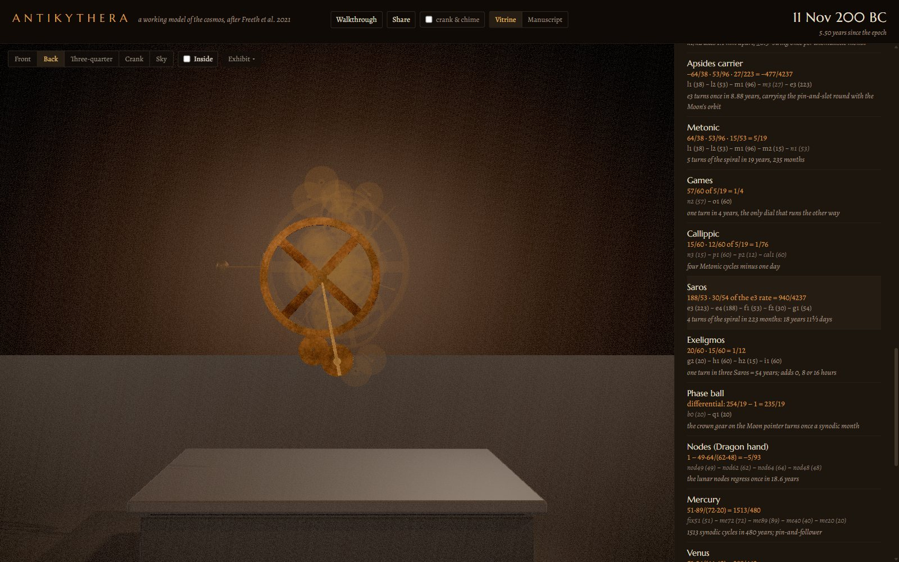
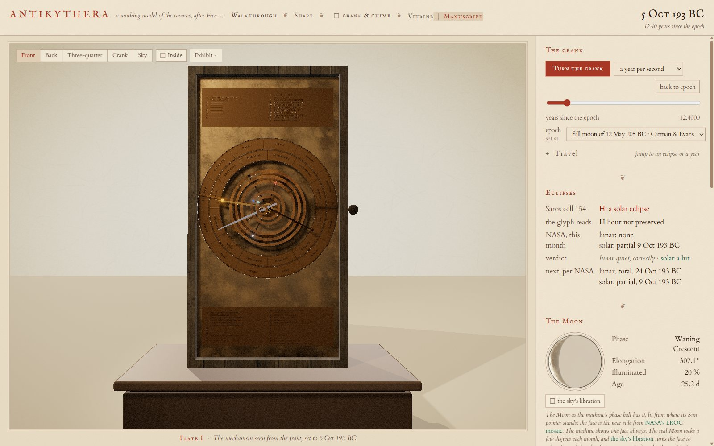

The Antikythera mechanism is a geared astronomical calculator recovered from a Roman-era shipwreck in 1901, and the most sophisticated object surviving from the ancient world. This is a reconstruction of it that actually works: turn the crank and all sixty-nine wheels turn with it, at the exact ratios their tooth counts give, with the pointers going where the bronze would have put them.
The machine is built parametrically in Blender from a single gear table, exported as glTF with its driver rules attached, and driven date by date in the browser. Beside it, a panel holds what the machine predicts against what really happened: NASA's eclipse canon for the eclipses, a modern ephemeris for the positions. When the machine is wrong, the panel says so.
The exhibit

The dials


Opening it up


The sky, and the arithmetic


The second version

How it is built
One file is the source of truth. data/gears.json holds every wheel: its teeth,
its module, the arbor it rides, the layer it sits in and what it meshes with. Nothing
downstream invents a number, and no third-party geometry is imported.
data/gears.jsonpython/mech/blender/export_glb.pyweb/
Rates are rotations per year of the main wheel, clockwise seen from the front positive. That
rule is written three times, in Python, in the Blender drivers and in the web gear graph, and
the tests hold the three together. Time is Julian Day throughout, on the proleptic Julian
calendar for BC dates, with astronomical years: nothing in the exhibit uses a JavaScript
Date, which cannot be trusted before 1582.
How the last of it was made is on the record as well. The plan for version 1.0 and the ledger of the rulings made against it are working documents, kept here as they were written.
How the numbers are checked
-
Every rate as a fraction
The ratio tests derive each pointer's rate from the tooth counts alone and assert it exactly: 254/19 for the sidereal Moon, 940/4237 for the Saros, −5/93 for the regressing lunar nodes, 1513/480 for Mercury. No decimals, no tolerances.
-
The rig checked against the solver
The Blender build drives the finished rig through a year and reads every gear back, and checks each pin-and-slot amplitude against asin(d/r). A wheel that does not turn at the rate the table gives fails the build.
-
The glyphs against the bronze
The eclipse-year model reproduces the 51, 38 and 28 glyph counts of Freeth 2014, and every glyph observed on the surviving cells of the Saros dial.
-
The predictions against NASA
Each month the machine predicts is held against the Five Millennium Canon of Solar and Lunar Eclipses. The panel reports a hit, a miss or a false alarm in plain words, and the accuracy chart shows how the error grows the further the crank is turned from the epoch.
Sources
- Freeth, Higgon, Dacanalis, MacDonald, Georgakopoulou and Wojcik, A Model of the Cosmos in the ancient Greek Antikythera Mechanism, Scientific Reports 11:5821 (2021), CC BY 4.0, and the earlier Antikythera Mechanism Research Project papers of 2006, 2008, 2012 and 2014.
- Eclipse predictions by Fred Espenak and Jean Meeus (NASA's Goddard Space Flight Center), Five Millennium Canon of Solar and Lunar Eclipses.
- Positions in the real sky: astronomy-engine (Don Cross, MIT).
- Parapegma and front dial inscriptions: Bitsakis and Jones, The Front Dial and Parapegma Inscriptions, Almagest 7.1 (2016), CC BY-NC 4.0.
- Epochs: Carman and Evans 2014 (the full moon of 12 May 205 BC); Voulgaris, Mouratidis and Vossinakis 2022 (22 December 178 BC).
- The Moon's face: NASA's CGI Moon Kit, the LROC colour mosaic, public domain. Rooms: Poly Haven HDRIs, CC0.